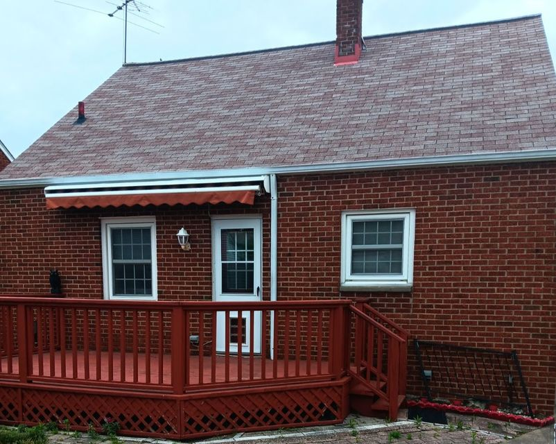
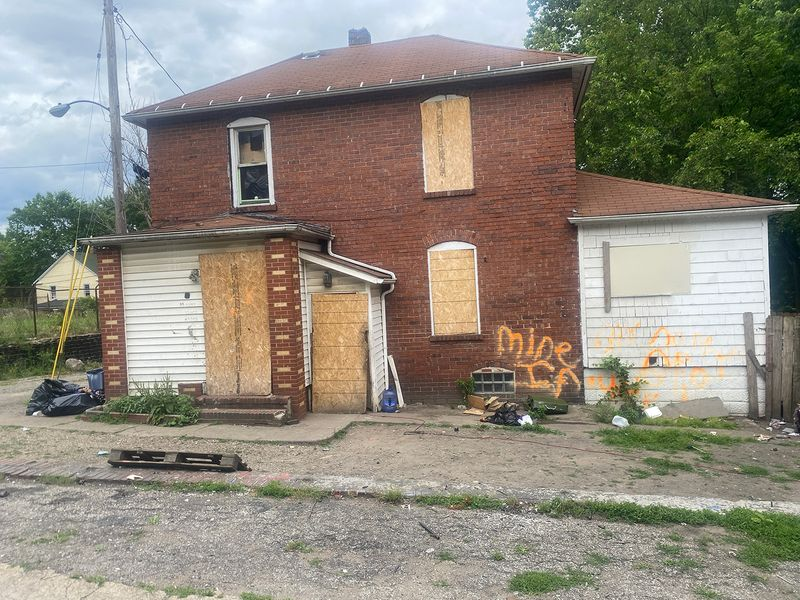

Timeline photos
This is the most recent picture I have of Cadillac. He's holding a gift Margie Hamlin gave to him and some other houseless people.

Timeline photos
THAT IS A PICTURE OF CADILLAC'S NEW HOME THAT HE BOUGHT!
We're talking
central air,
a fenced-in backyard for his dog Ranger to hang out in (there is even a doggy door)
He keeps talking about this amazing butcher block pull out cutting board in the kitchen.
He took all his belongings in his house and they all fit on the outside walls of his 2 and half car garage.
It sounds like the basement is partially finished. Apparently that's where the previous owners watched TV.

Timeline photos
Here's a picture of the house Cadillac has been living in until this past weekend. That's 85 Kent Place in Akron. It is now officially on the demolition list.